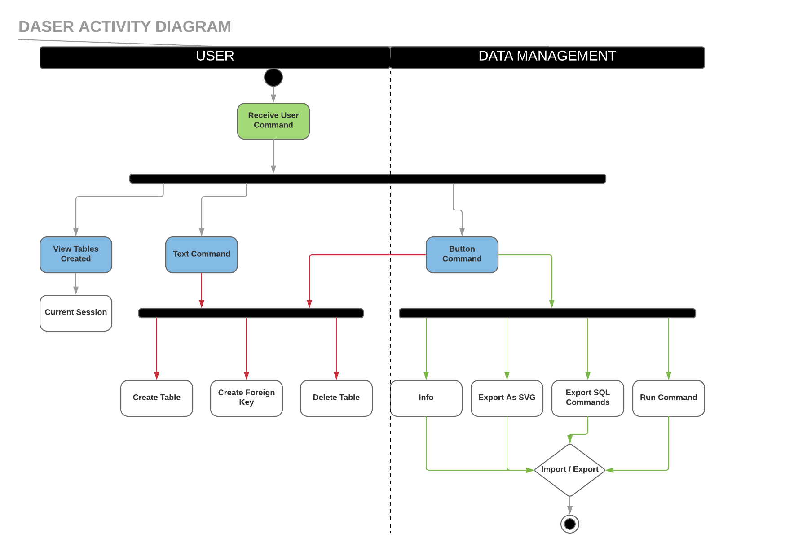
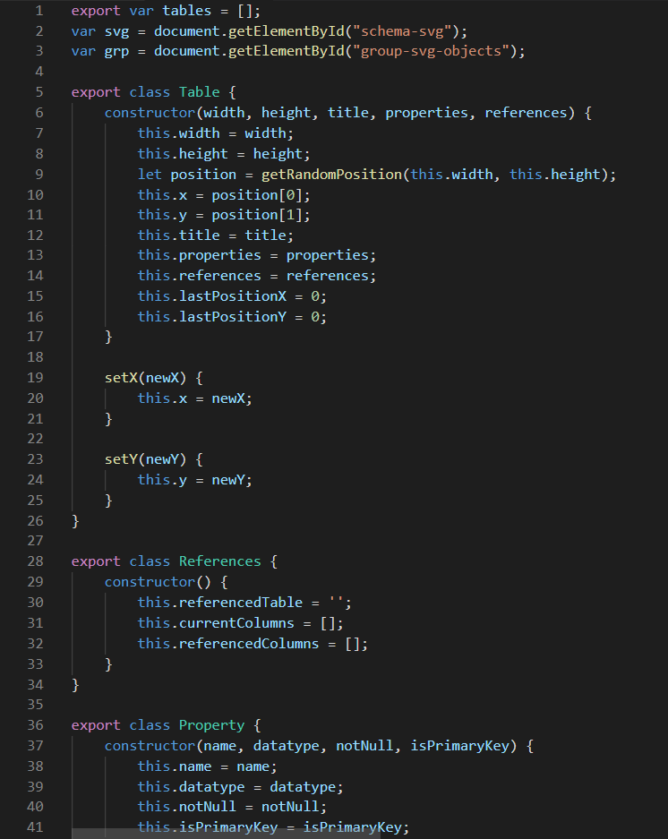
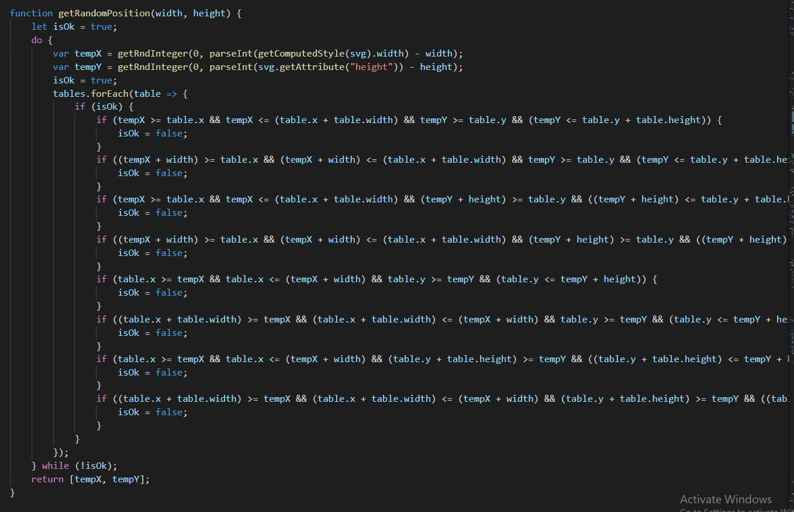
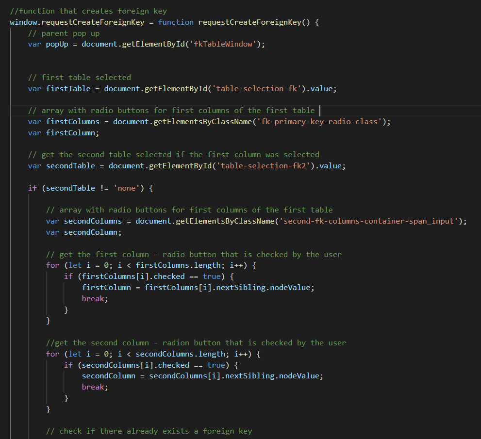
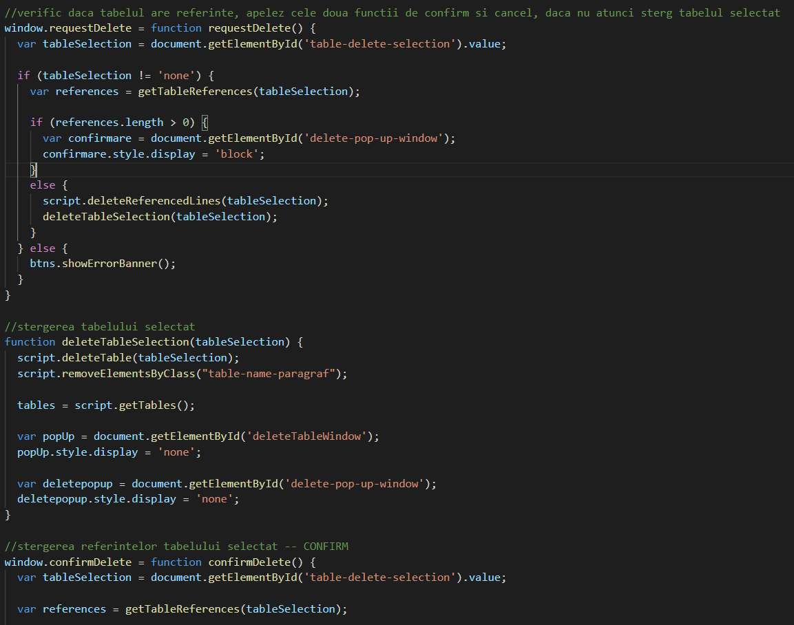
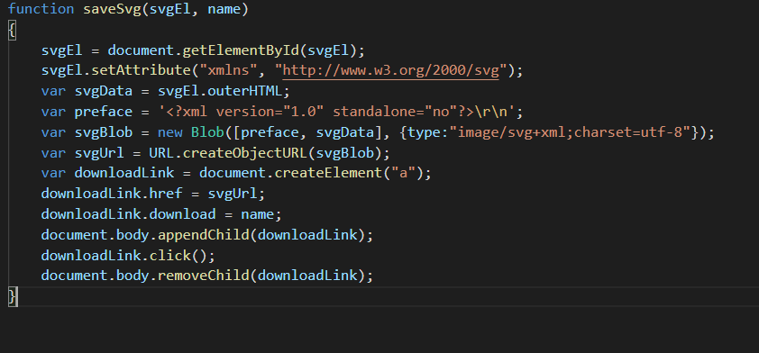
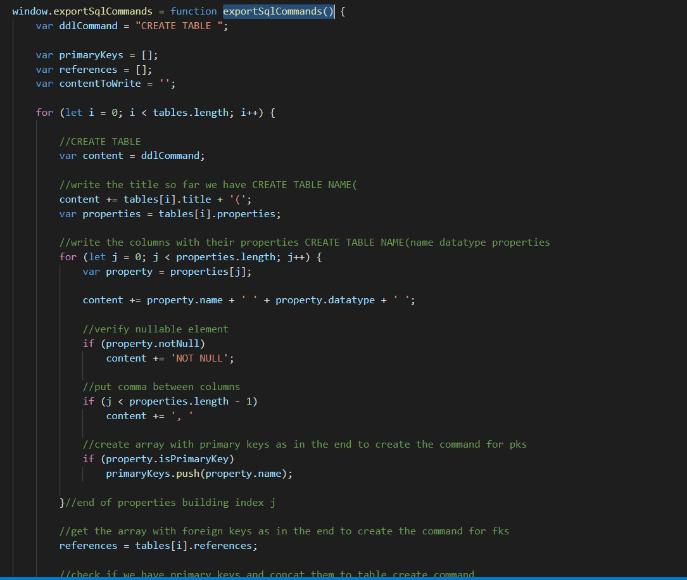
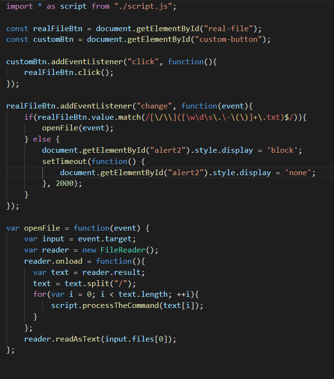
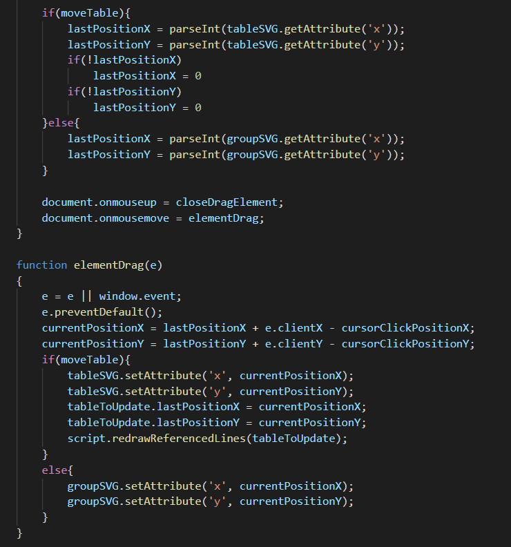

DASER
Editor schema baza de date
Autori
- Madalina Jitaru Student @Faculty of computer science
- Marian Alexandru Daniel Student @Faculty of computer science
- Alexandru Bodnar Student @Faculty of computer science
Cuprins
- Descrierea aplicatiei web
- Tehnologii utilizate
- User stories
- Actorii si scenariile de utilizare
-
Diagrame:
- Arhitecturala
- Use case
- De activitate
-
Implementare:
- Create table
- Alter table
- Foreign key
- Delete table
- Export SVG
- Export SQL
- Import SQL
- SVGs Logic (Draw, Movement, Zoom)
- Testare
- Exploatare practica a aplicatiei
Afiliatii
- Facultatea de Informatica, "Alexandru Ioan Cuza" Universitatea din Iași
1. Descrierea aplicatiei web
Proiectul consta intr-o aplicatie Web care permite, la nivel de client, construirea interactiva a schemei unei baze de date relationale, inclusiv generand comenzile SQL aferente – pe baza unei abordari modulare (i.e. extensii proprii), se vor lua in consideratie multiple sisteme de gestiune a bazelor de date relationale. Reciproc, preluam local sau de la o distanta o lista de comenzi SQL pentru crearea unei bazei de date, se va genera reprezetarea grafica a schemei acesteia, inclusiv legaturile dintre tabele, chei primare/straine, constrangeri de unicitate etc. Reprezentarea grafica a schemei va putea fi exportata in formatul SVG.
2. Tehnologii utilizate
HTML
-
HyperText Markup Language (HTML) este un limbaj de marcare utilizat pentru crearea paginilor web ce pot fi afișate într-un browser (sau navigator). Scopul HTML este mai degrabă prezentarea informațiilor – paragrafe, fonturi, tabele ș.a.m.d. – decât descrierea semanticii documentului.
CSS
-
CSS (Cascading Style Sheets) este un standard pentru formatarea elementelor unui document HTML. Stilurile se pot atașa elementelor HTML prin intermediul unor fișiere externe sau în cadrul documentului, prin elementul 'style' și/sau atributul style. CSS se poate utiliza și pentru formatarea elementelor XHTML, XML și SVGL.
JavaScript
-
Java Script JavaScript este un limbaj de programare care permite utilizatorilor să implementeze concepte ample pe paginile web, realizand lucruri complexe pentru utilizatorul site-ului pe care acesta le poate viziona, afișând actualizări de conținut în timp util sau hărți interactive, grafice anímate 2D/3D si multe altele. Am ales sa folosim javascript pentru crearea/stergerea dinamica a tabelelor, relatiilor dintre ele, afisarea/ascunderea popup-urilor, precum si la manipularea tabelelor si a schemei unei baze de date de catre utilizator. De asemenea vom utiliza javascript atat pentru exportarea in format SVG cat si pentru exportarea comenzilor SQL aferente crearii schemei unei baze de date. Javascript este usor de invatat, un sunt necesare configurari, este construit in browserul web. Asadar l-am ales pentru simplitatea lui in utilizare, cat si pentru manipularea cu usurinta a elementelor html, si editarea stilizarii paginii prin utilizarea metodelor de editare/adaugare a elementelor DOM (document object model).
3. User stories
Ca utilizator uman, pot efectua diferite operatii pentru o vizualizare buna a bazei mele de date, precum: crearea/stergea tabele necesare, crearea/stergerea cheilor primare/straine (prin aceesarea butoanelor sau scrierea comenzilor SQL).
Ca utilizator uman, pot avea o baza de date mare si pentru a putea lucra mai usor pe ea, de exemplu pentru mici modificari pot face zoom in si zoom out prin folosirea mouse-wheel-ului, dar de asemenea pot muta atat tabele cat si schema bazei de date tot prin folosirea mouse-ului.
Ca utilizator uman, pot importa comenzile SQL in urma caruia va fi creata schema bazei de date.
Ca utilizator uman, pot realiza doua tipuri de export: export ca si SVG dar si export comenzilor SQL.
Ca utilizator uman, pot vizualiza informatiile despre folosirea aplicatiei.
4. Actorii si scenariile de utilizare
- Actori:
- 1. Aplicatia
- 2. Utilizatorul uman
- Scenarii de utilizare:
-
Crearea sau stergerea tabelelor si a relatiilor dintre ele:
- Accesarea paginii aplicatiei.
- Accesarea butonului de “create table”, prin scrierea comenzilor SQL in input text sau prin aceesarea butonului “Import SQL”.
- Daca utilizatorul a creat tabelul va accesa butonul de “create foreign key” pentru realizarea cheilor straine/primare.
- Daca utilizatorul a creat un tabel gresit il poate sterge prin accesarea butonului “delete”.
-
Vizualizarea schemei bazei de date:
- Accesarea paginii aplicatiei.
- Userul poate vizualiza schema bazei de date prin accesarea butonului “move”.
- Userul poate de asemenea naviga prin schema bazei de date prin zoom in si zoom out folosint mouse-wheel-ului.
-
Export schema bazei de date ca si SVG:
- Accesarea paginii aplicatiei.
- Realizarea schemei bazei de date.
- Accesarea butonului “Export as SVG”.
-
Export fisier cu comenzi SQL:
- Accesarea paginii aplicatiei.
- Realizarea schemei bazei de date.
- Accesarea butonului “Export SQL commands”.
-
Vizualizarea informatiilor despre aplicatie:
- Accesarea paginii aplicatiei.
- Accesarea butonului “info”.
5. Diagrame
a. Arhitecturala

Aplicatia este la nivel de client, impartita in urmatoarele module(toate utilizand javascript):
-> Modul pentru crearea/instatierea in pagina a tabelelor SVG:
Modul pentru crearea/instantierea in pagina a relatiilor dintre tabele:
-> Modul pentru stergerea tabelelor/relatiilor dintre tabele:
-> Modul pentru a simula actiunile utilizatorului asupra Schemei de baza de date:
-> Modul pentru a exporta in format SVG:
-> Modul pentru a exporta comenzile SQL:
-> Modul pentru a face toggle ferestrelor de creare/stergere/informare:
-> Modul pentru importarea comenzilor SQL aferente crearii unei scheme de baza de date:
b. Use-case

User:
- Un user dupa ce a accesat pagina aplicatiei poate crea tabele sau chei primare/straine fie prin folosirea butonului de “create table”fie prin importarea SVG. De asemenea poate crea si prin utilizarea input text-ului unde poate scrie comenzi SQL.
- Dupa ce a creat tabele, poate sa stearga tot prin aceleasi metode (comenzi SQL, import SQL sau prin butonul de “delete”).
- Un user poate sa exporte schema bazei de date fie prin export SVG, fie prin export SQL commands.
- Un user poate sa navigheze prin schema bazei de date prin mai multe metode, acelea fiind: move – prin click (poate sa mute atat un tabel cat si intreaga schema bazei de date), select – prin click (selecteaza un tabel sau relatiile dintre tabele), zoom-in/zoom-out - prin mouse-wheel (poate sa micsoreze sau sa mareasca intreaga schema a bazei de date).
- Si nu in ultimul rand, un user poate vizualiza informatiile despre utilizarea aplicatiei prin folosirea butonului “info” .
b. Diagrama de activitate
In aceasta diagrama se pot observa activitatile pe care utilizatorul le poate face pe aplicatia Daser. Comenzile utilizatorului sunt de doua tipuri, prin comenzi de tip text el poate crea tabele sau relatii intre acestea, de asemenea le poate sterge. Utilizatorul poate face aceste actiuni si cu ajutorul unor butoane, si prin completarea unor informatii in diferite meniuri. Aceasta aplicatie ii ofera utilizatorului si o fereastra de informare la care acesta poate ajunge printr-un singur click pe butonul de info, posibilitatea de a exporta in formatul SVG schema de baza de date creata, cat si exportarea comenzilor SQL intr-un fisier local pentru a putea recrea baza de date fizic. Utilizatorul poate importa fisiere text cu comenzi SQL ce creaza tabele si relatii intre ele.
6. Implementare
Create table
In vederea crearii de tabele am creat o clasa Table. Aceasta clasa contine proprietati si metode necesare in interactiunea userului cu tabelele cat si in interactiunea dintre tabele intre ele. Pentru a tine cont de toate tabelele create de utilizator am creat o lista cu toate instantele obiectului Table. Crearea de tabele am facut-o posibila prin cele 3 metode cerute in cerinta implementarii aplicatiei. Prima posibilitate este in introducerea comenzii sql aferente pentru crearea unui tabel in inputul SQL Command si rularea acesteia prin apasarea tastei Enter, sau a butonului de run sql command situat langa. Pentru a afisa tabelele in pozitii unice la creare, am implementat o modalitate de a constrange spatiul de instantiere pe suprafata svg-ului folosind o metoda simpla de a verifica coliziunea dintre tabele. Coordonatele unui tabel nou creat sunt preluate random pe baza unor constrangeri de minim si maxim, date de catre suprafata schemei svg. In vederea afisarii coloanelor si a tipurilor de date, dimensiunile tabelelor au o latime fixata, variind numai inaltimea lor, pe baza numarului de coloane. Cu cat numarul coloanelor creste, cu atat inaltimea tabelului este mai mare pentru a putea afisa totul intr-o maniera placuta. O alta modalitate de a crea tabele este prin ferestra de Create Table. Fereastra ce este afisata din javascript, ea existand pe tot parcursul rularii aplicatiei ascunsa in DOM. Prin apasarea butonului de Create Table, javascript face fereastra vizibila, optiunile disponibile in aceasta fiind un simplu formular, creat de asemenea dinamic prin javascript. Butonul +, prin apasarea lui face un apel catre o functie javascript ce adauga in dom, la locatia potrivita in fereastra de create table a unor noi campuri pentru coloane si tipul acestora de date. Toate aceste informatii sunt salvate in proprietatiile tabelului, mai apoi tabelul fiind adaugat in lista de tabele.
Validarea unei comenzi de create table este facuta in javascript pe baza unei expresii regulate. Prin aceasta, daca comanda este valida, urmeaza a fi sparta in bucati pentru a obtine informatiile necesare tabelului. In caz de invalidare a comenzii, niste pop-up-uri cu scopul de a notifica userul ca o eroare a avut loc, cu un mesaj specific au fost create si sunt facute vizibil in pagina. Aceste pop-up-uri, se pot inchide apasand un buton in forma de cruce, sau prin apasarea tastei Esc. Daca utilizatorul nu actioneaza printr-o comanda, dupa 2 secunde, pop-up-ul de eroare se inchide automat. Pentru aceasta o functie ce transpune fereastra cu mesajul de eroare pe hide se activeaza in urma unui timeout setat.
Alter table
Pentru a crea functionalitatea de Alter table, am creat functii ce modifica informatiile asupra unui tabel. In primul rand o functie ce ne returneaza tabelul dorit pe baza de nume, acesta fiind unic, a fost creata. Aceasta functie este cea mai utilizata in aplicatie. O fereastra cu field-uri necesare/disponibile alterarii a fost creata. Prin aceasta fereastra utilizatorul poate altera atat coloanele, cat si cheile dintr-o tabela. Orice informatie completata in aceste field-uri, se trimite la apasarea butonului Submit si este prelucrata de o functie in javascript pentru a face modificarile necesare tabelului dorit. Daca o eroare este intampinata, se recurge la un mecanism de fall-back pentru a nu modifica inutil tabelul, si este afisata fereastra cu mesajul de eroare specific.

Foreign Key
Pentru a memora referintele unui tabel catre alt tabel, am creat o clasa noua References. Daca un tabel are o cheie straina cu un alt tabel, acesta va avea o instanta de tip References cu informatiile necesare foreign key-ului, precum: tabelul catre care se face referinta, coloanele care fac referinta, si coloanele catre care se face referentierea.
Delete table
Pentru stergerea tabelelor am creat de asemenea ca pentru orice comanda, posibilitatea de a fi rulata pe baza unei comenzi sql, sau din fereastra corespunzatoare acestei optiuni. Pentru aceasta am creat o functie , cat si un regex pentru validarea comenzii cat si ferestre cu mesaje corespunzatoare in caz de eroare. Functia va sterge din lista de tabele tabelul dorit, in urma caruia va sterge si legaturile altor tabele cu acesta, cat si legaturile acestuia cu restul tabelelor. Despre legaturi, atat vizibil la nivel de frontend cat si la nivel logic, voi descrie mai jos.
Export SVG
Pentru exportarea in format SVG am asignat dinamic atribute schemei SVG, si am folosit Blob de tipul xml/svg cu optiunile potrivite. Pentru a descarca continutul utilizatorului, din javascript am creat un element de tipul ancora cu atributul download setat. Fortam un click asupra acestui element si apoi il stergem din pagina pentru a nu lasa garbage in aplicatie. In acest moment, continutul atasat in href este descarcat automat in calculatorul utilizatorului.
Export SQL
Pentru exportarea comenzilor sql aferente crearii schemei de baze de date, am creat o functie ce parcurge tabelele si referintele acestora si creaza secventa de comenzi prin care se poate crea o reprezentare identica cu cea de pe aceasta aplicatie. Pentru descarcarea acestor comenzi am folosit aceeasi metoda ca la exportarea SVG.
Import SQL
Pentru Importarea de comenzi sql, am creat un input de tip file, ascuns in aplicatie, si un buton menit sa triggeruiasca acest input cu scopul de a stiliza aspectul standard al butonului de choose file. Am restrictionat accesul acestuia la fisiere de tip text, iar in cazul de erori am creat o fereastra cu mesaj corespunzator ce este afisata la orice problema. Fisierul de comenzi, odata importat, este citit intr-o functie javascript, divizat pe comenzi, si rulat folosind functiile anterioare, comanda cu comanda.
SVGs Logic (Draw, Movement, Zoom)
Pentru a desena SVG-urile aferente tabelelor si legaturilor dintre acestea. Am memorat in aceste instante coordonatele unde acestea sunt pozitionate. Pe baza coordonatelor, din javascript cream obiecte dinamic de tipul "rect" sau "line" pe care le inseram in DOM. Aceste obiecte au proprietati corespunzatoare cu cele ale tabelelor din partea logica a aplicatiei.
Pentru mutare, am creat o detectare a cursorului peste schema SVG, la dublu click verificam pozitia cursorului. Daca acesta se afla in perimetrul unui tabel, acesta este mutat luand in considerare si legaturile pe care acesta le are cu alte tabele. Pentru a se vedea o tranzitie fluenta a mutarii, legaturile dintre tabele sunt sterse si adaugate din nou, la fiecare frame. Posibilitatea de zoom in si zoom out este facuta pe baza de schimbare a dimensiunii grupului in care se afla elementele svg.

Testare
Ca si metodologii de testare pe aplicatia noastra, s-a realizat testarea manuala. In mare parte, multe bug-uri au fost descoperite de-a lungul dezvolarii aplicatiei si au fost fixate. Aceste bug-uri s-au manifestat datorita lipsei de lucru cu javascript in amanuntit, cat si cu lucrul cu imagini vectoriale. In momentul de fata aplicatia mai prezinta mici bug-uri ce pot fi fixate insa necesita o perioada buna de timp.
Exploatare practica a aplicatiei
Aplicatia Daser ajuta utilizatorii in a crea o vizualizare a unei scheme de baze de date inainte de a ajunge la implementarea propriuzisa. Pentru ca munca sa nu fie depusa in zadar, odata create instantele in aplicatia noastra, utilizatorul are posibilitatea de a exporta comenzile sql aferente crearii bazei de date si poate economisi timp. Daca acesta doreste a distribui ideile lui asupra crearii unei baze de date, o modalitate usoara si foarte practica ar fi exportarea in formatul svg a schemei de baza de date. Pentru a vedea o posibila utilizare a aplicatiei va recomandam sa urmariti filmuletul de pe github.